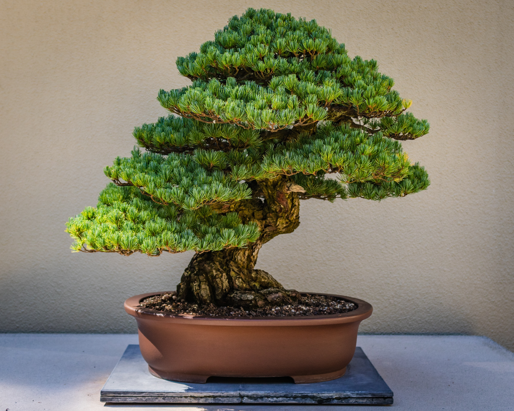
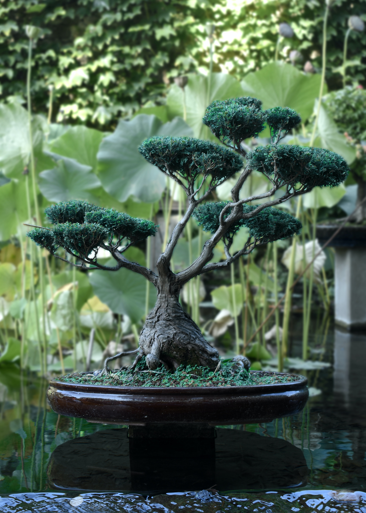
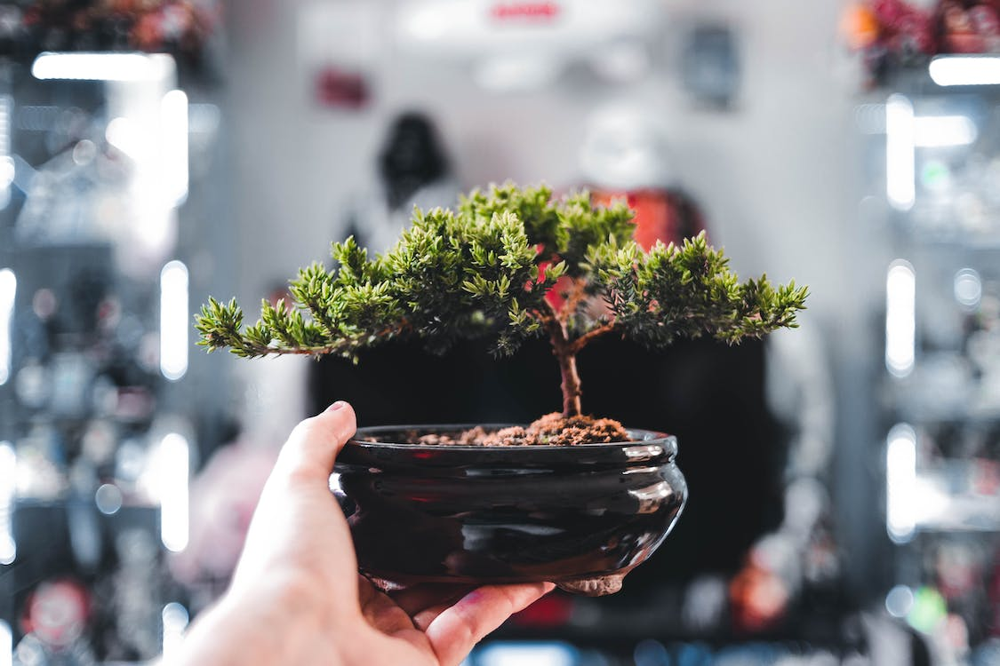
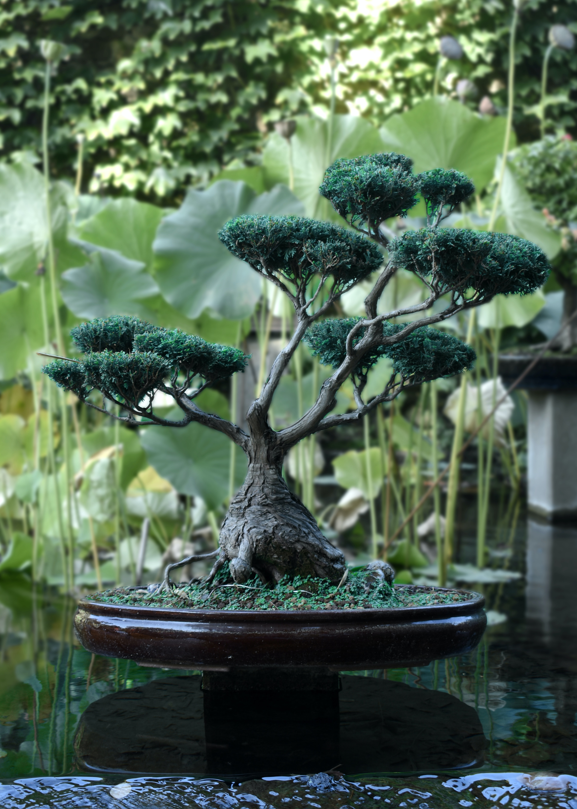
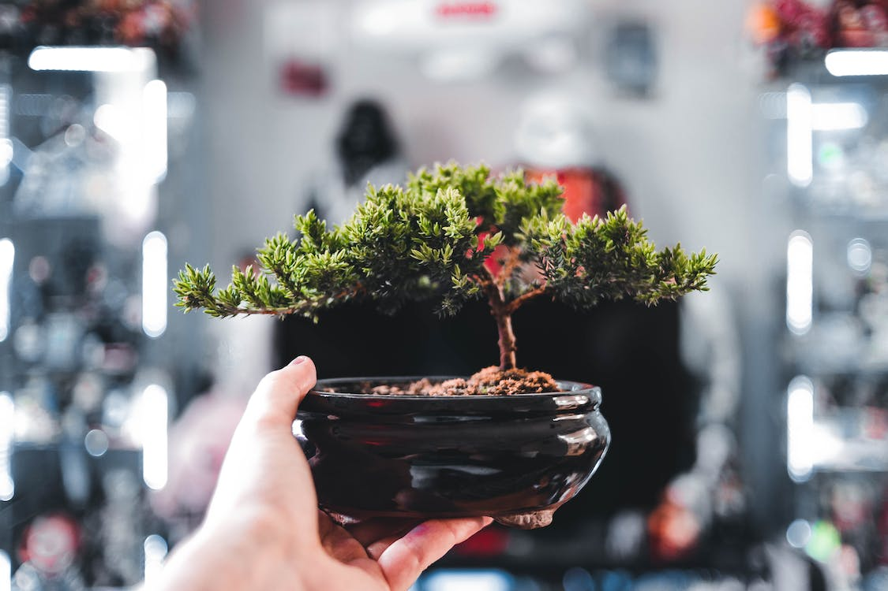
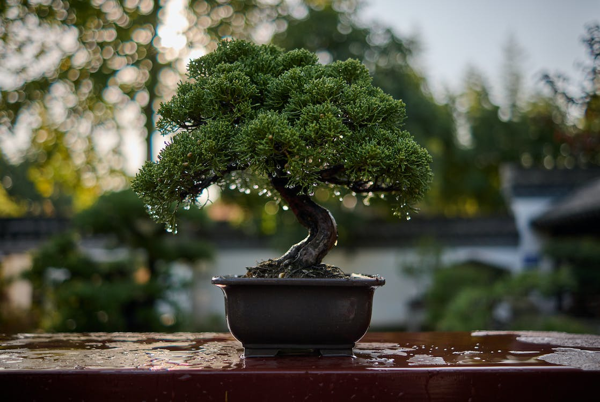
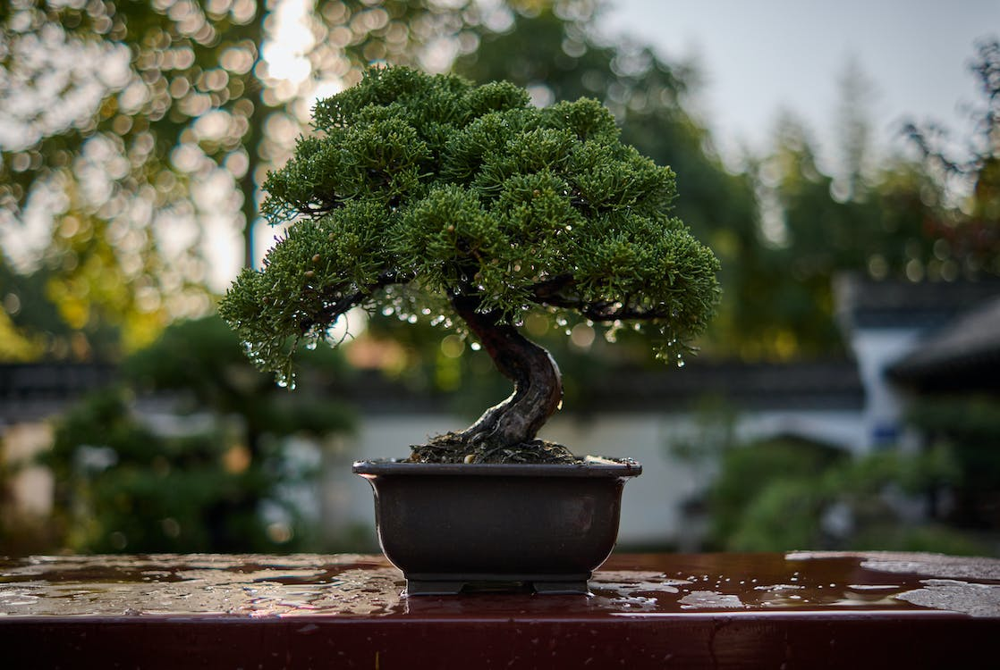
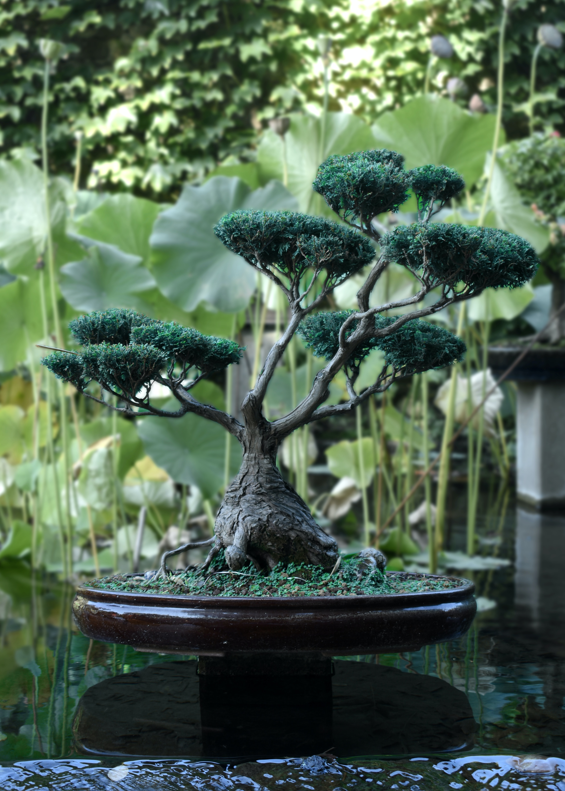
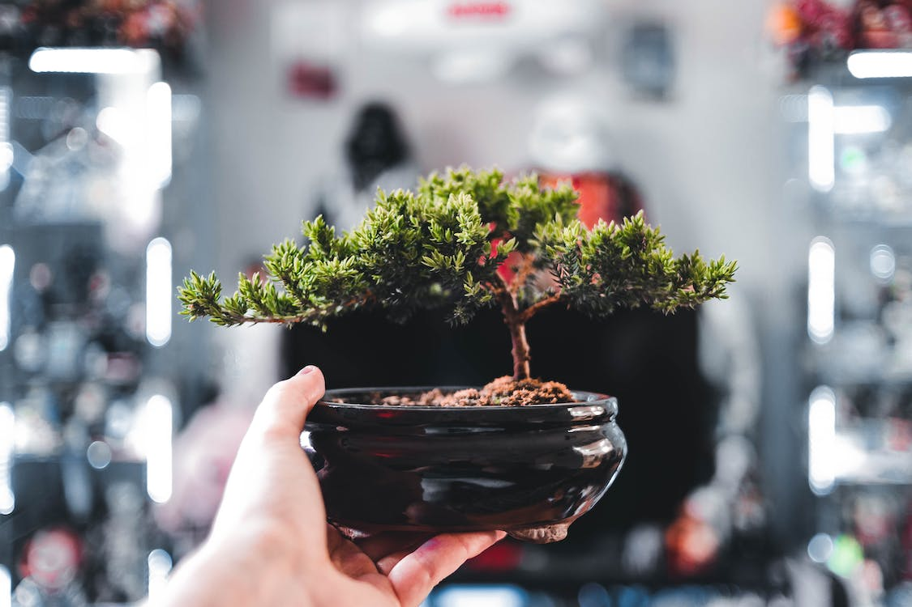
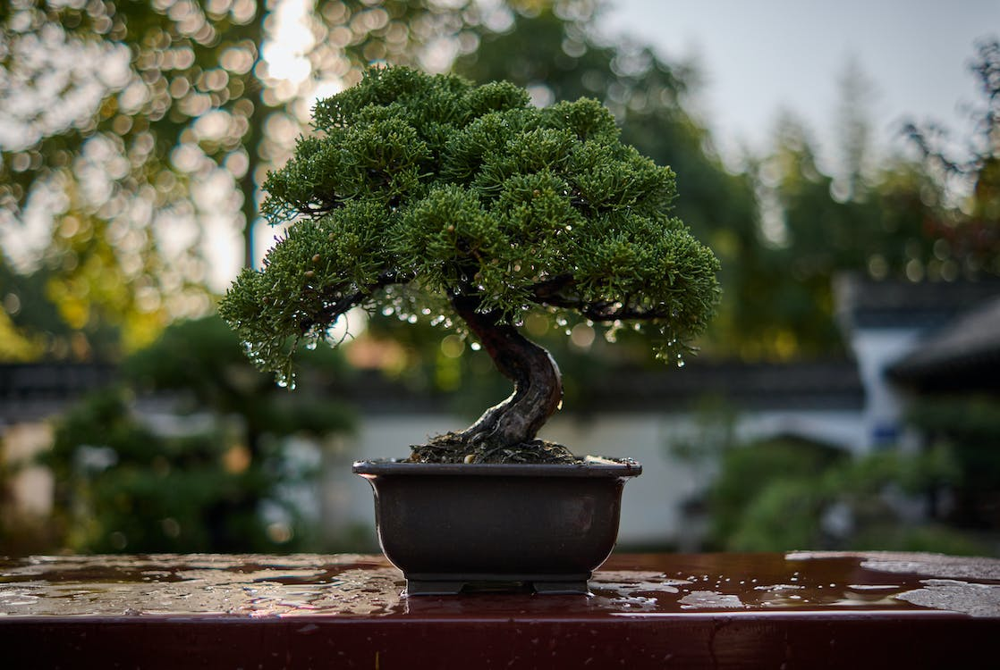

Aprende sobre bonsáis
Descubre todo lo que necesitas saber para cuidar y mantener tus bonsáis en buen estado.


Inspírate con nuestras creaciones
Explora las obras maestras creadas por nuestros expertos en bonsái.

 



 



